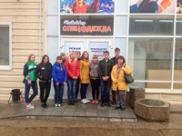

Экскурсия на предприятие "Чайковская спецодежда" 2016
В рамках учебной практики 13 сентября 2016 года был организован ознакомительный визит на предприятие ООО «Чайковская спецодежда». Предприятие «Чайковская спецодежда» работает в г. Чайковском с 1998г. под руководством Салтыкова Сергея Леонидовича. На сегодняшний день ООО «Чайковская спецодежда» обеспечивает своей продукцией крупные предприятия города такие как: «Сибур», «Ростелеком», «Новомед», «Энергосервис», «Газпром», «Газмаш», а также получает заказы из других городов России. На экскурсии обучающиеся познакомились с работой предприятия по пошиву спецодежды различного назначения, условиями труда рабочих и специалистов. После того как мы прослушали краткую презентацию компании, нам была предоставлена возможность увидеть полный технологический процесс изготовления спецодежды от разработки и изготовления лекал до упаковки и отправки продукции получателю. Нам показали каким должно быть современное производственное оборудование. Обучающиеся увидели работу сотрудников, отметили их профессионализм и темп работы. Экскурсию по предприятию проводила Бадрутдинова Люция Ринатовна, технолог предприятия. Обучающиеся заинтересовались работой оператора швейного оборудования, заработной платой, условиями приема на работу, условиями труда, отметили, что очень понравилась экскурсия.
